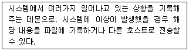
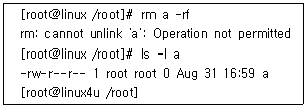

인터넷보안전문가-2급 (2015-04-05 기출문제)
1과목: 정보보호개론
1. 이산대수 문제에 바탕을 두며 인증메시지에 비밀 세션키를 포함하여 전달 할 필요가 없고 공개키 암호화 방식의 시초가 된 키 분배 알고리즘은?
- RSA 알고리즘
- DSA 알고리즘
- MD-5 해쉬 알고리즘
- Diffie-Hellman 알고리즘
(정답률: 88%)

2. 다음 중 유형이 다른 암호 알고리즘은?
- RSA(Rivest-Shamir-Adelman)
- AES(Advanced Signature Algorithm)
- DSA(Digital Signature Algorithm)
- KCDSA(Korea Certification-based Digital Signature Algorithm)
(정답률: 71%)
3. SEED(128 비트 블록 암호 알고리즘)의 특성으로 옳지 않은 것은?
- 데이터 처리단위는 8, 16, 32 비트 모두 가능하다.
- 암ㆍ복호화 방식은 공개키 암호화 방식이다.
- 입출력의 크기는 128 비트이다.
- 라운드의 수는 16 라운드이다.
(정답률: 84%)
4. Kerberos 의 다음 용어 설명 중 옳지 않은 것은?
- AS : Authentication Server
- KDC : Kerbers 인증을 담당하는 데이터 센터
- TGT : Ticket을 인증하기 위해서 이용되는 Ticket
- Ticket : 인증을 증명하는 키
(정답률: 85%)
5. 암호의 목적에 대한 설명 중 옳지 않은 것은?
- 비밀성(Confidentiality) : 허가된 사용자 이외 암호문 해독 불가
- 무결성(Integrity) : 메시지 변조 방지
- 접근 제어(Access Control) : 프로토콜 데이터 부분의 접근제어
- 부인봉쇄(Non-Repudiation) : 송수신 사실 부정방지
(정답률: 76%)
6. 안전한 Linux Server를 구축하기 위한 방법으로 옳지 않은 것은?
- 불필요한 데몬을 제거한다.
- 불필요한 Setuid 프로그램을 제거한다.
- 시스템의 무결성을 주기적으로 검사한다.
- 무결성을 검사하기 위한 데이터베이스를 추후 액세스가 용이하게 하기 위하여 검사할 시스템에 저장하는게 좋다.
(정답률: 95%)
7. IP 계층에서 보안 서비스를 제공하기 위한 IPsec에서 제공되는 보안 서비스로 옳지 않은 것은?
- 부인방지 서비스
- 무연결 무결성 서비스
- 데이터 원천 인증
- 기밀성 서비스
(정답률: 52%)
8. 인터넷에서 일어날 수 있는 대표적인 보안사고 유형으로 어떤 침입 행위를 시도하기 위해 일정기간 위장한 상태를 유지하며, 코드 형태로 시스템의 특정 프로그램 내부에 존재 하는 것은?
- 논리 폭탄
- 웜
- 트로이 목마
- 잠입
(정답률: 82%)
9. WWW에서의 보안 프로토콜로 옳지 않은 것은?
- S-HTTP(Secure Hypertext Transfer Protocol)
- SEA(Security Extension Architecture)
- PGP(Pretty Good Privacy)
- SSL(Secure Sockets Layer)
(정답률: 64%)
10. 다음 중 방화벽의 유형으로 옳지 않은 것은?
- Packet Filtering Gateway
- Circuit Level Gateway
- Screened Host
- Proxy서버/응용 Gateway
(정답률: 80%)
2과목: 운영체제
11. SSL 레코드 계층의 서비스를 사용하는 세 개의 특정 SSL 프로토콜 중의 하나이며 메시지 값이 '1'인 단일 바이트로 구성되는 것은?
- Handshake 프로토콜
- Change cipher spec 프로토콜
- Alert 프로토콜
- Record 프로토콜
(정답률: 69%)
12. Linux의 기본 디렉터리에 해당하지 않는 것은?
- /etc
- /root
- /grep
- /home
(정답률: 79%)
13. Linux 시스템에서 '-rwxr-xr-x' 퍼미션을 나타내는 숫자는?
- 755
- 777
- 766
- 764
(정답률: 87%)
14. vi의 3가지 모드중에서 실제로 vi편집기의 내용을 수정할때 사용하며 i, a, o등을 누른 후, 텍스트를 입력할 수 있는 상태모드는?
- 명령모드
- 실행모드
- 편집모드
- 치환모드
(정답률: 78%)
15. RPM의 설치나 제거시에 사용하는 옵션 중에서 '--nodeps'의 의미는?
- 어떤 패키지의 의존성을 무시하고 설치하고자 할때
- 디렉터리를 마치 '/'처럼 생각하고 설치하고자 할때
- 패키지를 실제로 설치하지 않고 충돌이나 의존성 문제가 있는지 검사만 할 때
- 새로운 패키지를 지우고 구 버전의 패키지로 교체할때
(정답률: 73%)
16. Linux에서 TAR로 묶인 'mt.tar'를 풀어내는 명령은?
- tar -tvf mt.tar
- tar -cvf mt.tar
- tar -cvvf mt.tar
- tar -xvf mt.tar
(정답률: 87%)
17. Linux 명령어에 대한 설명으로 옳지 않은 것은?
- ls : 디렉터리를 변경할 때 사용한다.
- cp : 파일을 다른 이름으로 또는 다른 디렉터리로 복사할 때 사용한다.
- mv : 파일을 다른 파일로 변경 또는 다른 디렉터리로 옮길 때 사용한다.
- rm : 파일을 삭제할 때 사용한다.
(정답률: 83%)
18. 프로트콜을 POP3 대신에 IMAP를 쓰는 환경에서 vi편집기를 이용해서 POP 프로토콜을 주석처리 하고, IMAP 프로토콜의 주석을 제거 하였지만 서비스가 정상적으로 이루어지지 않고 있다면 그 원인에 해당하는 것은?
- IMAP 프로토콜은 POP3를 대신할 수 없기 때문이다.
- Sendmail과 IMAP는 근본적으로 상관이 없기 때문이다.
- 데몬 설정 파일을 변경한 후 데몬을 재실행 해주지 않았기 때문이다.
- 해당 포트가 열렸기 때문이다.
(정답률: 82%)
19. 아파치 웹서버 Type중에서 오직 유닉스 플랫폼만 지원하며, 웹서버 설정 변경시 웹서버를 리부팅 할 필요가 없으나 새로운 프로세서를 만들 때 마다 설정 파일을 참고하기 때문에 속도가 느린 Type은?
- inetd
- standalone
- main server
- virtual hosts
(정답률: 58%)
20. 아파치 웹서버 운영시 서비스에 필요한 여러 기능들을 제어하기 위하여 설정해야 하는 파일은?
- httpd.conf
- htdocs.conf
- index.php
- index.cgi
(정답률: 88%)
21. DHCP(Dynamic Host Configuration Protocol) Scope 범위 혹은 주소 풀(Address Pool)을 만드는데 주의할 점에 속하지 않는 것은?
- 모든 DHCP 서버는 최소한 하나의 DHCP 범위를 가져야 한다.
- DHCP 주소 범위에서 정적으로 할당된 주소가 있다면 해당 주소를 제외해야 한다.
- 네트워크에 여러 DHCP 서버를 운영할 경우에는 DHCP 범위가 겹치지 않아야 한다.
- 하나의 서브넷에는 여러 개의 DHCP 범위가 사용될 수 있다.
(정답률: 81%)
22. Windows 2003 Server에서 FTP 서비스에 대한 설명으로 옳지 않은 것은?
- 웹 사이트가 가지고 있는 도메인을 IP Address로 바꾸어 주는 서비스를 말한다.
- IIS에서 기본적으로 제공하는 서비스이다.
- 기본 FTP 사이트는 마우스 오른쪽 버튼을 눌러 등록정보를 수정할 수 있다.
- FTP 서비스는 네트워크를 통하여 파일을 업로드 및 다운로드 할 수 있는 서비스를 말한다.
(정답률: 69%)
23. Windows 2003 Server의 DNS 서비스 설정에 관한 설명으로 옳지 않은 것은?
- 정방향 조회 영역 설정 후 반드시 역방향 조회 영역을 설정해 주어야 한다.
- Windows 2003 Server는 고정 IP Address를 가져야 한다.
- Administrator 권한으로 설정해야 한다.
- 책임자 이메일 주소의 at(@)은 마침표(.)로 대체된다.
(정답률: 70%)
24. Windows 2003 Server에서 제공하고 있는 VPN 프로토콜인 L2TP(Layer Two Tunneling Protocol)에 대한 설명 중 옳지 않은 것은?
- IP 기반의 네트워크에서만 사용가능하다.
- 헤드 압축을 지원한다.
- 터널 인증을 지원한다.
- IPsec 알고리즘을 이용하여 암호화 한다.
(정답률: 71%)
25. 'shutdown -r now' 와 같은 효과를 내는 명령어는?
- halt
- reboot
- restart
- poweroff
(정답률: 76%)
26. Linux에서 'ls -al' 명령에 의하여 출력되는 정보로 옳지 않은 것은?
- 파일의 접근허가 모드
- 파일 이름
- 소유자명, 그룹명
- 파일의 소유권이 변경된 시간
(정답률: 86%)
27. Linux 시스템에서 다음의 역할을 수행하는 데몬은?

- inet
- xntpd
- syslogd
- auth
(정답률: 81%)
28. 삼바 데몬을 Linux에 설치하여 가동하였을 때 열리는 포트로 알맞게 나열한 것은?
- UDP 137, 139
- TCP 137, 139
- TCP 80, 25
- UDP 80, 25
(정답률: 76%)
29. RedHat Linux에서 사용자의 'su' 명령어 시도 기록을 볼 수 있는 로그는?
- /var/log/secure
- /var/log/messages
- /var/log/wtmp
- /var/log/lastlog
(정답률: 84%)
30. Linux에서 현재 위치한 디렉터리를 표시해 주는 명령어는?
- mkdir
- pwd
- du
- df
(정답률: 87%)
3과목: 네트워크
31. 데이터 링크 오류제어를 위한 ARQ 방식 중 전송 성능이 가장 우수한 방식은?
- Stop-and-Wait ARQ
- Go-back-N ARQ
- Selective Repeat ARQ
- 모든 ARQ는 전송 성능이 동일하다.
(정답률: 75%)
32. 프로토콜의 기능 중 전송을 받는 개체에서 발송지로부터 오는 데이터의 양이나 속도를 제한하는 기능은?
- 흐름 제어
- 에러 제어
- 순서 제어
- 접속 제어
(정답률: 91%)
33. Star Topology에 대한 설명 중 올바른 것은?
- 시작점과 끝점이 존재하질 않는 폐쇄 순환형 토폴로지이다.
- 모든 노드들에 대해 간선으로 연결한 형태이다.
- 연결된 PC 중 하나가 다운되어도 전체 네트워크 기능은 수행된다.
- 라인의 양쪽 끝에 터미네이터를 연결해 주어야 한다.
(정답률: 79%)
34. 네트워크에 스위치 장비를 도입함으로서 얻어지는 효과로 옳지 않은 것은?
- 패킷의 충돌 감소
- 속도 향상
- 네트워크 스니핑(Sniffing) 방지
- 스푸핑(Spoofing) 방지
(정답률: 59%)
35. Routed Protocol로 옳지 않은 것은?
- TCP/IP
- OSPF
- IPX/SPX
- Appletalk
(정답률: 65%)
36. OSI 7 Layer 중에서 암호, 복호, 인증, 압축 등의 기능이 수행되는 계층은?
- 전송 계층
- 네트워크 계층
- 응용 계층
- 표현 계층
(정답률: 77%)
37. '192.168.0.0/255.255.255.0' 네트워크에서 '192.168.0.3/255.255.255.0' 컴퓨터가 'ping 192.168.0.255' 라는 명령을 내렸을 때 예상되는 동작은?
- 네트워크 주소이므로 ping 프로그램은 아무런 메시지도 출력하지 않고 종료한다.
- 패킷이 내부망을 떠돌아다니다가 TTL 이 만료되어 에러 메시지를 출력한다.
- 같은 네트워크 내에 있는 모든 컴퓨터들이 응답패킷을 보낸다.
- 자기 자신에게 'ICMP_ECHO_REQUEST' 패킷을 보낸다.
(정답률: 88%)
38. 프로토콜 스택에서 가장 하위 계층에 속하는 것은?
- IP
- TCP
- HTTP
- UDP
(정답률: 78%)
39. '서비스' - 'Well-Known 포트' - '프로토콜'의 연결이 옳지 않은 것은?
- FTP - 21 - TCP
- SMTP - 25 - TCP
- DNS - 53 - TCP
- SNMP - 191 - TCP
(정답률: 77%)
40. IPv6 프로토콜의 구조는?
- 32bit
- 64bit
- 128bit
- 256bit
(정답률: 93%)
41. 패킷 내부의 ICMP 메시지로 옳지 않은 것은?
- 에코 요청 및 응답
- 패킷의 손실과 손실량
- 목적지 도달 불가
- 시간 초과
(정답률: 70%)
42. TCP/IP 프로토콜을 이용해서 서버와 클라이언트가 통신을 할 때, Netstat 명령을 이용해 현재의 접속 상태를 확인할 수 있다. 클라이언트와 서버가 현재 올바르게 연결되어 통신 중인 경우 Netstat으로 상태를 확인하였을 때 나타나는 메시지는?
- SYN_PCVD
- ESTABLISHED
- CLOSE_WAIT
- CONNECTED
(정답률: 80%)
43. TCP와 UDP의 차이점을 설명한 것 중 옳지 않은 것은?
- TCP는 전달된 패킷에 대한 수신측의 인증이 필요하지만 UDP는 필요하지 않다.
- TCP는 대용량의 데이터나 중요한 데이터 전송에 이용 되지만 UDP는 단순한 메시지 전달에 주로 사용된다.
- UDP는 네트워크가 혼잡하거나 라우팅이 복잡할 경우에는 패킷이 유실될 우려가 있다.
- UDP는 데이터 전송 전에 반드시 송수신 간의 세션이 먼저 수립되어야 한다.
(정답률: 82%)
44. TCP 헤더 필드의 내용으로 옳지 않은 것은?
- TTL(Time To Live)
- 발신지 포트번호
- 윈도우 크기
- Checksum
(정답률: 84%)
45. 패킷(Packet)에 있는 정보로 옳지 않은 것은?
- 출발지 IP Address
- TCP 프로토콜 종류
- 전송 데이터
- 목적지 IP Address
(정답률: 86%)
4과목: 보안
46. Windows 2003 Server의 보안영역에는 각각 클라이언트 보안, 네트워크 보안, 물리적인 보안, 원격 액세스 보안, 인터넷 정책, 인적보안, 사용자 정책 등이 있다. 이에 대한 설명으로 옳지 않은 것은?
- 원격 액세스 보안 : 직접 원격 접속을 통한 인증되지 않은 액세스로부터 네트워크 시스템을 보호
- 클라이언트 보안 : 클라이언트 컴퓨터들을 인증된 사용자 또는 인증되지 않는 사용자로부터 보호
- 네트워크 보안 : 외부인으로 부터 하드웨어 침입에 대비하여 물리적인 시스템을 보호
- 물리적인 보안 : 네트워크 시스템들이 있는 컨테이너 공간, 설비들을 안전하게 관리
(정답률: 80%)
47. SSH(Secure Shell)에 대한 설명으로 옳지 않은 것은?
- 안전하지 못한 네트워크에서 안전하게 통신할 수 있는 기능과 강력한 인증방법을 제공한다.
- 문자를 암호화하여 IP Spoofing, DNS Spoofing으로부터 보호할 수 있다.
- 쌍방 간 인증을 위해 Skipjack 알고리즘이 이용된다.
- 네트워크의 외부 컴퓨터에 로그인 할 수 있고 원격 시스템에서 명령을 실행하고 다른 시스템으로 파일을 복사할 수 있도록 해주는 프로그램이다.
(정답률: 81%)
48. Linux에서 root 권한 계정이 'a' 라는 파일을 지우려 했을때 나타난 결과이다. 이 파일을 지울 수 있는 방법은?

- 파일크기가 0 바이트이므로 지워지지 않는다. 파일에 내용을 넣은 후 지운다.
- 현재 로그인 한 사람이 root가 아니다. root로 로그인한다.
- chmod 명령으로 쓰기금지를 해제한다.
- chattr 명령으로 쓰기금지를 해제한다.
(정답률: 81%)
49. 웹 해킹의 한 종류인 SQL Injection 공격은 조작된 SQL 질의를 통하여 공격자가 원하는 SQL구문을 실행하는 기법이다. 이를 예방하기 위한 방법으로 옳지 않은 것은?
- 에러 감시와 분석을 위해 SQL 에러 메시지를 웹상에 상세히 출력한다.
- 입력 값에 대한 검증을 실시한다.
- SQL 구문에 영향을 미칠 수 있는 입력 값은 적절하게 변환한다.
- SQL 및 스크립트 언어 인터프리터를 최신 버전으로 유지한다.
(정답률: 80%)
50. TCP_Wrapper의 기능으로 옳지 않은 것은?
- inetd에 의하여 시작되는 TCP 서비스들을 보호하는 프로그램으로써 inetd가 서비스를 호출할 때 연결 요청을 평가하고 그 연결이 규칙에 적합한 정당한 요청인지를 판단하여 받아들일지 여부를 결정한다.
- 연결 로깅과 네트워크 접근제어의 주요 기능을 주로 수행한다.
- TCP_Wrapper 설정 점검 명령어는 tcpdchk와 tcpmatch 등이 있다.
- iptables이나 ipchains 명령을 이용하여 설정된다.
(정답률: 57%)
51. PGP(Pretty Good Privacy)에서 사용되는 알고리즘이 아닌 것은?
- RSA
- DES
- MD5
- IDEA
(정답률: 60%)
52. Linux에서 각 사용자의 가장 최근 로그인 시간을 기록하는 로그 파일은?
- cron
- messages
- netconf
- lastlog
(정답률: 82%)
53. 악용하고자 하는 호스트의 IP Address를 바꾸어서 이를 통해 해킹하는 기술은?
- IP Spoofing
- Trojan Horse
- DoS
- Sniffing
(정답률: 85%)
54. 스머프 공격(Smurf Attack)에 대한 설명으로 올바른 것은?
- 두 개의 IP 프래그먼트를 하나의 데이터 그램인 것처럼 하여 공격 대상의 컴퓨터에 보내면, 대상 컴퓨터가 받은 두 개의 프래그먼트를 하나의 데이터 그램으로 합치는 과정에서 혼란에 빠지게 만드는 공격이다.
- 서버의 버그가 있는 특정 서비스의 접근 포트로 대량의 문자를 입력하여 전송하면, 서버의 수신 버퍼가 넘쳐서 서버가 혼란에 빠지게 만드는 공격이다.
- 서버의 SMTP 서비스 포트로 대량의 메일을 한꺼번에 보내고, 서버가 그것을 처리하지 못하게 만들어 시스템을 혼란에 빠지게 하는 공격이다.
- 출발지 주소를 공격하고자 하는 컴퓨터의 IP Address로 지정한 후, 패킷신호를 네트워크 상의 컴퓨터에 보내게 되면, 패킷을 받은 컴퓨터들이 반송 패킷을 다시 보내게 되는데, 이러한 원리를 이용하여 대상 컴퓨터에 갑자기 많은 양의 패킷을 처리하게 함으로써 시스템을 혼란에 빠지게 하는 공격이다.
(정답률: 79%)
55. DoS(Denial of Service) 공격의 특징으로 옳지 않은 것은?
- 공격의 원인이나 공격자를 추적하기 힘들다.
- 루트 권한을 획득하여 시스템을 장악한다.
- 공격시 이를 해결하기 힘들다.
- 사용자의 실수로 발생할 수도 있다.
(정답률: 80%)
56. 방화벽의 주요 기능으로 옳지 않은 것은?
- 접근제어
- 사용자 인증
- 로깅
- 프라이버시 보호
(정답률: 73%)
57. 종단 간 보안 기능을 제공하기 위한 SSL 프로토콜에서 제공되는 보안 서비스로 옳지 않은 것은?
- 통신 응용간의 기밀성 서비스
- 인증서를 이용한 클라이언트와 서버의 인증
- 메시지 무결성 서비스
- 클라이언트에 의한 서버 인증서를 이용한 서버 메시지의 부인방지 서비스
(정답률: 56%)
58. 해킹에 성공한 후 해커들이 하는 행동의 유형으로 옳지 않은 것은?
- 추후에 침입이 용이하게 하기 위하여 트로이 목마 프로그램을 설치한다.
- 서비스 거부 공격 프로그램을 설치한다.
- 접속 기록을 추후의 침입을 위하여 그대로 둔다.
- 다른 서버들을 스캔 프로그램으로 스캔하여 취약점을 알아낸다.
(정답률: 89%)
59. 지정된 버퍼보다 더 많은 데이터를 입력해서 프로그램이 비정상적으로 동작하도록 하는 해킹 방법은?
- DoS
- Trojan Horse
- Worm 바이러스 백도어
- Buffer Overflow
(정답률: 86%)
60. Tripwire의 모드에 속하지 않는 것은?
- 데이터베이스 생성모드
- 무결성 검사모드
- 데이터베이스 삭제모드
- 데이터베이스 갱신모드
(정답률: 47%)